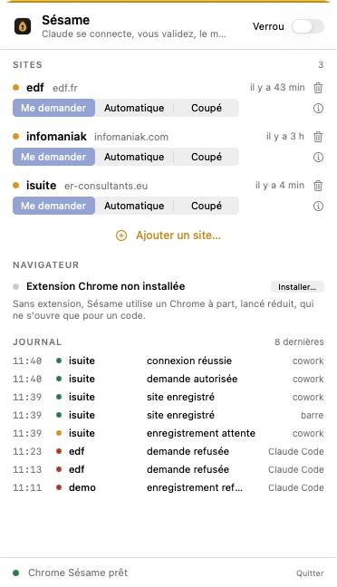
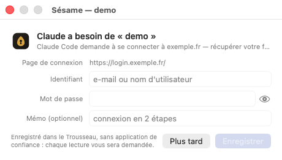
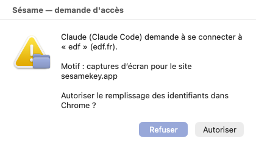
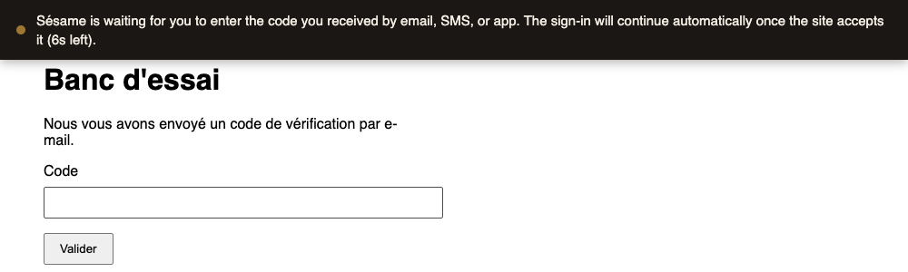

Sésame ouvre vos comptes à la place de Claude, automatiquement, sans jamais lui montrer un identifiant. Pour les sites sensibles, vous validez d'un clic. Tout reste sur votre Mac, dans le Trousseau d'Apple.
Gratuit. Sans compte. Sans serveur. macOS 13 ou plus récent.
Claude appelle l'outil sesame_login("edf") avec un motif : « récupérer la facture d'août ».
Claude veut se connecter sur edf.
Claude ne reçoit jamais un identifiant
Le principe
Automatique par défaut : Sésame se connecte pour Claude sans que vous ayez à cliquer, sauf sur les sites que vous réglez sur « Me demander ». Dans tous les cas, aucune commande ne renvoie un secret : Claude obtient trois réponses possibles, et rien d'autre. Le mot de passe est tapé dans la page par Sésame, jamais montré.
fait — le formulaire est rempli, la session est ouverterefusé — vous avez dit non, ou l'accès est coupééchec — le site a résisté, sans jamais dire pourquoi en détailComment ça marche
Téléchargez l'archive, ouvrez-la, et double-cliquez sur « Install Sesame ». L'installateur se présente à Claude tout seul et pose une petite graine dans la barre des menus. La première fois, macOS demande un clic droit puis « Ouvrir ».
Cliquez sur la graine, « Ajouter un site », tapez votre identifiant et votre mot de passe une seule fois. Ils partent dans le Trousseau d'Apple, chiffrés. Choisissez sa règle : Automatique pour ne plus rien valider, ou Me demander pour les sites sensibles.
En Automatique, Sésame remplit le formulaire tout seul dans votre navigateur : rien à valider. Sur un site « Me demander », une fenêtre vous demande votre accord d'abord. Claude continue son travail.
Écran par écran
Des captures de Sésame tel qu'il est, pas des maquettes. Trois fenêtres au quotidien, une graine dans la barre des menus.



sesame migrate-keychain.
Le navigateur
Depuis sa version 136, Chrome interdit à tout programme de piloter votre profil habituel. C'est une protection contre les logiciels malveillants, et Sésame la respecte. Voici ce que ça change, et ce qu'on a fait pour que ça ne se voie presque pas.
chrome://extensions et active le mode développeur pour vous.extension/, copiez l'ID affiché sous son nom, collez-le dans Sésame et cliquez « Relier ».Sécurité
Vous choisissez : automatique, ou validation à chaque fois pour les sites sensibles. Et un bouton Bloquer qui coupe tout, à tout moment.
Sésame confie vos secrets au Trousseau macOS, le même qui garde vos mots de passe Safari et vos clés Wi-Fi. Chiffrement d'Apple, protégé par votre session et, sur les Mac récents, par la puce de sécurité.
Pas de cloud, pas de compte Sésame, pas de synchronisation cachée. Le secret ne circule qu'entre le Trousseau et votre navigateur, sur la même machine.
Automatique : Claude se connecte sans rien vous demander. Me demander : chaque connexion passe par une fenêtre Sésame qui dit qui, quel site, pourquoi. Vous changez d'avis en un clic, site par site.
Chaque demande est notée : qui, quand, quel site, autorisé ou refusé, réussi ou non. Claude peut le lire pour vous rendre compte. Il ne peut pas y toucher.
Dans la barre de menus, il coupe toutes les connexions d'un coup, quel que soit le site, le temps que vous le souhaitez.
Compatibilité
Sésame parle le protocole MCP, le standard ouvert par lequel les assistants utilisent des outils. Claude le comprend aujourd'hui. Les autres suivront, sans rien changer à vos mots de passe.
Contrôle
| Site | Règle | Dernier accès |
|---|---|---|
| OVH ovh.com | automatique | hier, 18:02 |
| EDF particulier.edf.fr | me demander | aujourd'hui, 09:28 |
| Impôts impots.gouv.fr | accès coupé | il y a 12 jours |
Chaque ligne dit qui a demandé, pour quel site, et ce que vous avez répondu. Rien n'y est jamais effacé.
Questions
Non. Ils sont dans le Trousseau d'Apple sur votre Mac, et n'en sortent que pour être tapés dans votre navigateur, sur la même machine. Sésame n'a pas de serveur, pas de compte, pas de statistiques.
Il n'a pas de commande pour ça. Sésame ne lui propose que « connecte-toi », « liste les sites », « lis le journal ». Même en insistant, la seule chose qu'il obtient est « fait », « refusé » ou « échec ».
Chrome refuse depuis sa version 136 qu'un programme pilote votre profil habituel. Sésame utilise donc, par défaut, un Chrome à profil séparé, qu'il lance lui-même, réduit, et qu'il ne déplie que pour un code. Vous pouvez vous en passer avec l'extension Chrome (bêta) : elle remplit le formulaire directement dans votre Chrome habituel, sans deuxième fenêtre.
Pour un site enregistré depuis la 0.5.1, il ne le demande pas : l'assistant Trousseau de Sésame crée et relit lui-même l'élément, en silence, dès le premier accès. Pour un site plus ancien, une seule commande règle ça pour de bon : sesame migrate-keychain — une fenêtre du Trousseau par site, vous cliquez « Autoriser », et c'est terminé.
Depuis la graine dans la barre des menus : « Navigateur » puis « Installer… ». Sésame ouvre chrome://extensions et active le mode développeur pour vous ; chargez le dossier extension/, copiez l'ID affiché sous son nom, collez-le dans Sésame et cliquez « Relier ». Sésame confirme quand la connexion est active. C'est une bêta : dans votre Chrome habituel, une autre extension ayant accès à la page pourrait en théorie observer la frappe, comme elle pourrait vous observer vous-même.
Ils restent entre vos mains. Quand un site en demande un, Sésame vous prévient, affiche « J'attends votre code » en haut de la page, et patiente pendant que vous le tapez. La connexion ne reprend qu'une fois le code accepté. C'est voulu : le deuxième facteur, c'est vous.
Les secrets sont dans le Trousseau, protégés par votre session macOS et le chiffrement du disque. Sans votre mot de passe de session, ils sont illisibles. Changez tout de même vos mots de passe, comme pour n'importe quel ordinateur perdu.
Rien. Sésame est gratuit et son code est ouvert : n'importe qui peut vérifier qu'il fait exactement ce qui est écrit ici.
Téléchargement
Une application, un glisser-déposer, et Claude se connecte pour vous. Sans jamais savoir comment.